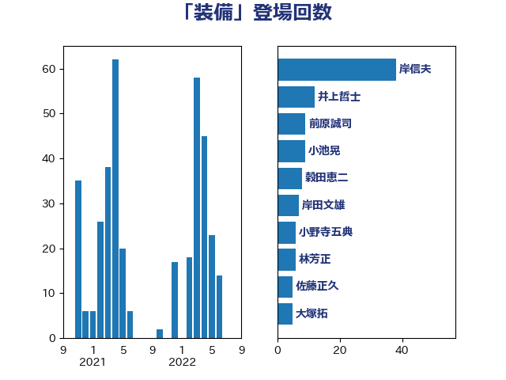

単語「装備」

| 岸信夫 | 自由民主党 | 38 回 |
| 井上哲士 | 日本共産党 | 12 回 |
| 前原誠司 | 国民民主党 | 9 回 |
| 小池晃 | 日本共産党 | 9 回 |
| 穀田恵二 | 日本共産党 | 8 回 |
| 岸田文雄 | 自由民主党 | 7 回 |
| 小野寺五典 | 自由民主党 | 6 回 |
| 林芳正 | 自由民主党 | 6 回 |
| 佐藤正久 | 自由民主党 | 5 回 |
| 大塚拓 | 自由民主党 | 5 回 |
| 小西洋之 | 立憲民主党 | 5 回 |
| 岡田克也 | 立憲民主党 | 5 回 |
| 斎藤アレックス | 国民民主党 | 5 回 |
| 渡辺周 | 立憲民主党 | 5 回 |
| 福山哲郎 | 立憲民主党 | 5 回 |
| 城内実 | 自由民主党 | 4 回 |
| 緒方林太郎 | 無所属 | 4 回 |
| 美延映夫 | 日本維新の会 | 4 回 |
| 青柳仁士 | 日本維新の会 | 4 回 |
| 中谷元 | 自由民主党 | 3 回 |
| 岩本剛人 | 自由民主党 | 3 回 |
| 松川るい | 自由民主党 | 3 回 |
| 柿沢未途 | 無所属 | 3 回 |
| 野上浩太郎 | 自由民主党 | 3 回 |
| 金子恭之 | 自由民主党 | 3 回 |
| あべ俊子 | 自由民主党 | 2 回 |
| 塩川鉄也 | 日本共産党 | 2 回 |
| 大塚耕平 | 国民民主党 | 2 回 |
| 杉本和巳 | 日本維新の会 | 2 回 |
| 枝野幸男 | 立憲民主党 | 2 回 |
| 浜地雅一 | 公明党 | 2 回 |
| 熊田裕通 | 自由民主党 | 2 回 |
| 片山さつき | 自由民主党 | 2 回 |
| 玉木雄一郎 | 国民民主党 | 2 回 |
| 篠原豪 | 立憲民主党 | 2 回 |
| 紙智子 | 日本共産党 | 2 回 |
| 羽田次郎 | 立憲民主党 | 2 回 |
| 芳賀道也 | 国民民主党 | 2 回 |
| 菅直人 | 立憲民主党 | 2 回 |
| 萩生田光一 | 自由民主党 | 2 回 |
| 赤羽一嘉 | 公明党 | 2 回 |
| 音喜多駿 | 日本維新の会 | 2 回 |
| 高橋光男 | 公明党 | 2 回 |
| 高橋千鶴子 | 日本共産党 | 2 回 |
| 鬼木誠 | 立憲民主党 | 2 回 |
| 三浦信祐 | 公明党 | 1 回 |
| 上田清司 | 国民民主党 | 1 回 |
| 中根一幸 | 自由民主党 | 1 回 |
| 串田誠一 | 日本維新の会 | 1 回 |
| 井上貴博 | 自由民主党 | 1 回 |
| 伊波洋一 | 無所属 | 1 回 |
| 伊藤俊輔 | 立憲民主党 | 1 回 |
| 伊藤孝恵 | 国民民主党 | 1 回 |
| 伊藤岳 | 日本共産党 | 1 回 |
| 佐藤啓 | 自由民主党 | 1 回 |
| 勝目康 | 自由民主党 | 1 回 |
| 北神圭朗 | 無所属 | 1 回 |
| 古川元久 | 国民民主党 | 1 回 |
| 城井崇 | 立憲民主党 | 1 回 |
| 塩田博昭 | 公明党 | 1 回 |
| 宮崎政久 | 自由民主党 | 1 回 |
| 小沢雅仁 | 立憲民主党 | 1 回 |
| 小田原潔 | 自由民主党 | 1 回 |
| 小野泰輔 | 日本維新の会 | 1 回 |
| 尾身朝子 | 自由民主党 | 1 回 |
| 山井和則 | 立憲民主党 | 1 回 |
| 山添拓 | 日本共産党 | 1 回 |
| 岩屋毅 | 自由民主党 | 1 回 |
| 川田龍平 | 立憲民主党 | 1 回 |
| 志位和夫 | 日本共産党 | 1 回 |
| 掘井健智 | 日本維新の会 | 1 回 |
| 早稲田ゆき | 立憲民主党 | 1 回 |
| 末松義規 | 立憲民主党 | 1 回 |
| 森本真治 | 立憲民主党 | 1 回 |
| 武見敬三 | 自由民主党 | 1 回 |
| 水岡俊一 | 立憲民主党 | 1 回 |
| 沢田良 | 日本維新の会 | 1 回 |
| 浅田均 | 日本維新の会 | 1 回 |
| 浅野哲 | 国民民主党 | 1 回 |
| 渡辺創 | 立憲民主党 | 1 回 |
| 熊谷裕人 | 立憲民主党 | 1 回 |
| 玄葉光一郎 | 立憲民主党 | 1 回 |
| 田村まみ | 国民民主党 | 1 回 |
| 田村智子 | 日本共産党 | 1 回 |
| 田村貴昭 | 日本共産党 | 1 回 |
| 畦元将吾 | 自由民主党 | 1 回 |
| 石井苗子 | 日本維新の会 | 1 回 |
| 石原正敬 | 自由民主党 | 1 回 |
| 若松謙維 | 公明党 | 1 回 |
| 菅義偉 | 自由民主党 | 1 回 |
| 赤澤亮正 | 自由民主党 | 1 回 |
| 足立康史 | 日本維新の会 | 1 回 |
| 重徳和彦 | 立憲民主党 | 1 回 |
| 金村龍那 | 日本維新の会 | 1 回 |
| 長妻昭 | 立憲民主党 | 1 回 |
| 馬場伸幸 | 日本維新の会 | 1 回 |
| 高木啓 | 自由民主党 | 1 回 |